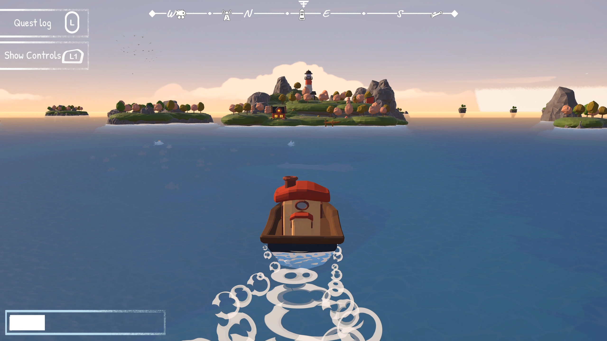
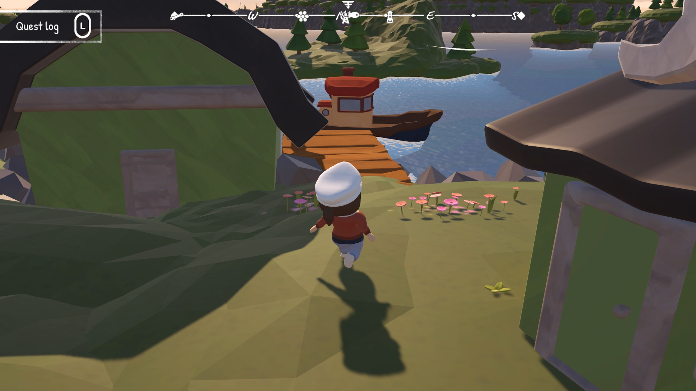

Windward is a story driven game where the player uses a ship to explore different islands and help the citizens with tasks as you slowly learn more about the world.
This game was made for a game project course during my second year at the University of Skövde where the goal was to create a game in a group of 11 people from start to finish in 12 weeks. I was one of 3 programmers and was responsible for the boat and player movement, minigames, menu logic and I also worked on some accessibility features such as automatically changing icons and smooth transitions when switching between different types of controls.
During this project I learned a lot about gameplay programming since I had to iterate over the boat movement and minigames multiple times to make them feel good and fun to play. I also learned a lot about working in a bigger team and how to work together with other disciplines.
I also learned a lot about working with controller support and the challenges that come with it, mainly challenges with UI and making sure it doesn't break. I also learned the challenges of trying to have support for keyboard & mouse and controller at the same time, which resulted in keyboard & mouse not being nearly polished enough.
Overall, this project is what got me interested in gameplay programming and I learned about the satisfaction of prototyping something that eventually leads to a finished product.